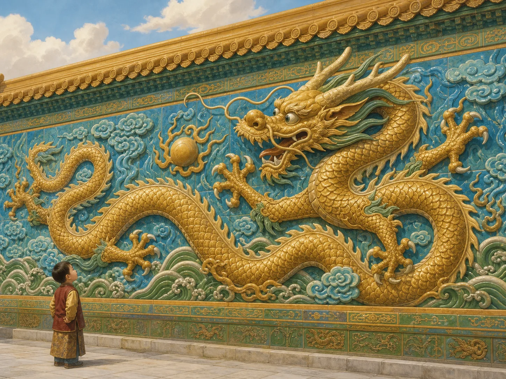
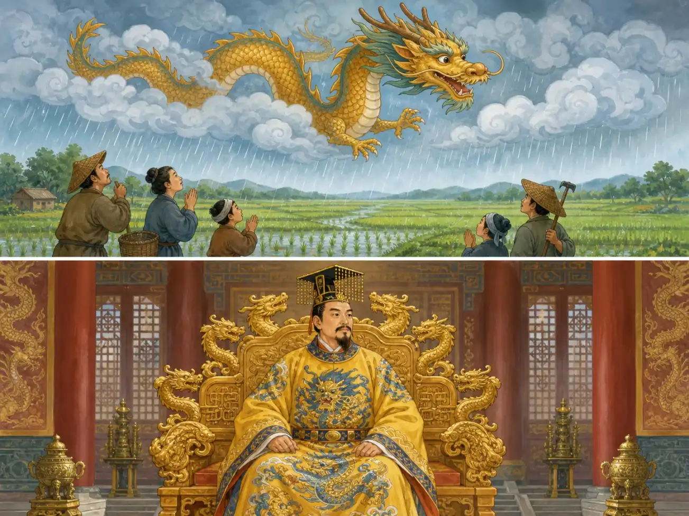
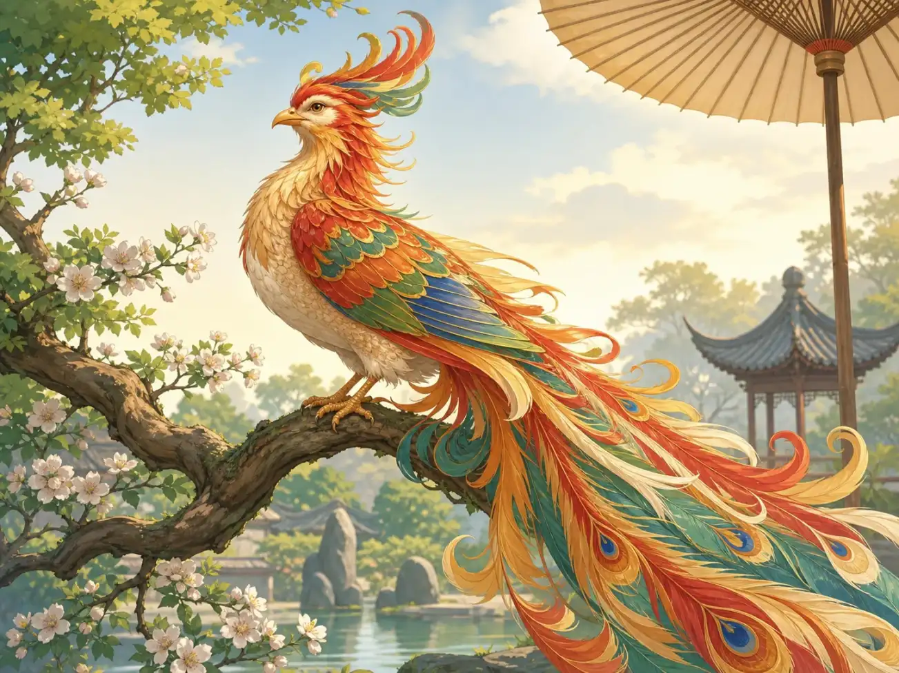
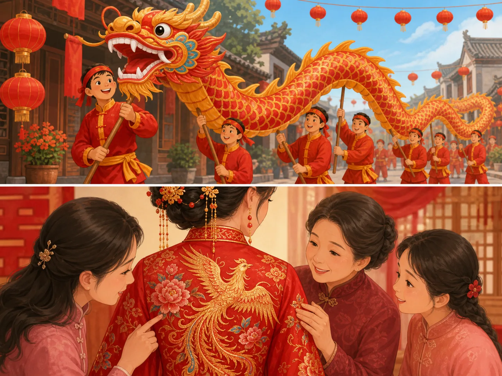

龙和凤凰：中国最吉祥的伙伴
Dragon and Phoenix: China's Luckiest Pair
Page 1
龙不是怪兽，更像管风雨的神兽
The Chinese Dragon Was Not a Monster

The dragon on a palace wall is not there to scare you. It points to power, weather, and water.
如果你站在故宫的九龙壁前，一抬头，就会看见一条龙从彩色琉璃里盘旋出来。眼睛圆圆的，胡须往外飞，好像下一秒就要冲进云里。
可中国的龙不是西方故事里那种住山洞、喷火、和骑士打架的怪兽。中国的龙更像一种管风、管雨、管水的神兽。古代中国很怕旱，也很怕大水，所以人们总把龙和天气、河流、收成连在一起想。
它不是真实存在过的动物，却像一个大家都认识的老角色。你一提到龙，很多中国人脑子里想到的，不是危险，而是力量、雨水和好运。
If you stand in front of the Nine-Dragon Wall in the Forbidden City and look up, you see a dragon twisting out of bright glazed tiles. Its eyes are wide. Its whiskers fly outward. It looks ready to leap into the clouds.
But the Chinese dragon was not like the cave dragons in many European stories. It was not mainly a fire-breathing monster that fought knights. In China, the dragon was more like a powerful creature linked to wind, rain, rivers, and harvests. Long ago, people feared drought and floods, so they often connected dragons with the natural world.
The dragon was never a real animal. Even so, it became a very familiar one in people's minds. When many Chinese people hear the word dragon, they do not think first of danger. They think of strength, rain, and good luck.
Page 2
龙也和皇帝连在一起
The Dragon Also Became a Sign of Imperial Power

The dragon was linked both to rain for the fields and to the emperor's special place.
龙不只管天上的雨，也慢慢走进了皇宫里。皇帝穿的叫龙袍，坐的叫龙椅，宫殿里到处都能看到龙的图案。
古代人会觉得这很合理。既然龙和风雨、水、收成有关，那么皇帝要管理天下，也像是借着龙的力量替老天办事。
所以，龙一边是自然里的神兽，一边又是皇权的符号。它不是随便一只漂亮动物，而是一种很有分量的形象。
The dragon did not stay only in stories about the sky and rivers. It also moved into the palace. The emperor wore dragon robes, sat on a dragon throne, and lived among dragon designs.
To people long ago, that made sense. If dragons were tied to rain, water, and the health of the harvest, then the ruler of the country could seem connected to that same power. The emperor was supposed to help keep the world in order, and the dragon became a sign of that role.
So the dragon carried two jobs at once. It belonged to nature, and it belonged to imperial power. It was not just a pretty creature. It was a symbol with real weight.
Page 3
凤凰像一只只在好时代出现的神鸟
The Phoenix Was a Bird of Peace and Good Signs

In legend, the phoenix was beautiful and rare. People said it appeared only in peaceful times.
凤凰常常和龙一起出现。龙让人想到力量和雨水，凤凰让人想到太平和好兆头。
古人想象里的凤凰，也是一只“拼”出来的神鸟。它不是你在树林里随便就能看到的鸟，而是一种只会在好时代出现的祥瑞。有人说它会停在梧桐树上，所以如果古人说“凤凰来了”，意思往往不是“飞来一只鸟”，而是“这一定是个好征兆”。
后来，龙常常代表最强的男性符号，凤凰常常代表最美好的女性符号。它们放在一起，就是大家常说的“龙凤呈祥”。
The phoenix often appears beside the dragon. If the dragon suggests strength and rain, the phoenix suggests peace and a lucky sign.
In legend, the phoenix was also built from imagination. It was not an everyday bird that might land in a tree outside your house. People said it appeared only in good, peaceful times. That is why, when someone long ago claimed a phoenix had appeared, they were usually not saying only, "A bird flew by." They were saying, "This must mean something wonderful."
Later, the dragon often stood for the strongest male symbol, while the phoenix often stood for the most honored female symbol. Put together, they became the famous pair people call dragon and phoenix bringing good fortune.
Page 4
到今天，它们还住在日常生活里
Today, They Still Live in Everyday Life

A dragon dance at New Year and a phoenix on a wedding dress both say the same thing: good fortune is here.
几千年过去了，龙和凤凰没有留在古书里睡着。过年的时候，长长的布龙还会在街上翻滚。结婚的时候，新娘礼服上常常绣着凤凰。灯笼、剪纸、摆件上，也到处能看到龙和凤。
如果一对双胞胎刚好是一个男孩一个女孩，中国人有时还会高兴地叫他们“龙凤胎”。你看，龙和凤凰早就不只是高高在上的神兽了，它们已经走进了很多人的日常生活。
两个从来没有真实存在过的动物，最后却成了那么多人最熟悉的吉祥符号。这就是想象力留下来的力量。
Thousands of years have passed, and dragons and phoenixes did not fall asleep inside old books. At New Year, a long cloth dragon still dances through the street. At weddings, a bride's dress may still shine with phoenix embroidery. Lanterns, paper cuttings, and home decorations often show the same pair.
If a pair of twins happens to be one boy and one girl, people may even smile and call them dragon-phoenix twins. That shows how far these two creatures have traveled. They are not only grand symbols from palaces and legends. They are part of ordinary life.
Two animals that never truly existed became two of the best-known lucky signs in China. That is what imagination can do when people carry it for a very long time.
小结
In Summary
龙让人想到风、雨、力量和皇权，凤凰让人想到太平、吉兆和美好的祝福。它们一个像天上的老朋友，一个像传说里的神鸟，最后一起住进了中国人的节日、婚礼和日常装饰里。
所以，龙和凤凰最有意思的地方，不是它们到底像什么动物，而是很多人一看见它们，就会想到：好运来了。
The dragon makes people think of weather, strength, and imperial power. The phoenix makes people think of peace, lucky signs, and good wishes. One feels like an old friend from the sky. The other feels like a magical bird from legend. Together, they moved into festivals, weddings, and everyday decorations.
That is why they matter so much. The most interesting question is not what animals they look like. It is why so many people see them and think right away: good luck has arrived.